음악은 비어 있습니다. ① 사진·영상 저장(사진은 길게 눌러 저장해도 됩니다) → ② 인스타 앱 ＋ → 릴스 → 저장한 사진·영상 → 「오디오」에서 음원 고르기 → ③ 본문 복사해 붙여 넣고 올리기 → ④ 「댓글 복사」 해서 카드뉴스와 릴스에 댓글로 붙여 넣고 길게 눌러 고정. 본문을 그대로 두면 다음 릴스가 생길 때 「인스타에 올림」 표시가 붙고 아래로 내려갑니다. 사진·영상은 올렸든 안 올렸든 3일이 지나면 지워집니다.
💬 코스피 9000, 1년 vs 2년? 👉 하이닉스 주주에게 공유해 주세요 👉 자세한 건 프로필 블로그 링크에서!
📌 핵심 요약 👇 ✔️ 메타 목표가 1,000달러가 둘이에요 ✔️ 메타 2분기 영업이익은 줄었어요 ✔️ 메타 실적은 10월 21일이에요 💬 뮤즈, 된다 vs 안 된다? 👉 메타 주주에게 공유해 주세요 👉 자세한 건 프로필 블로그 링크에서!
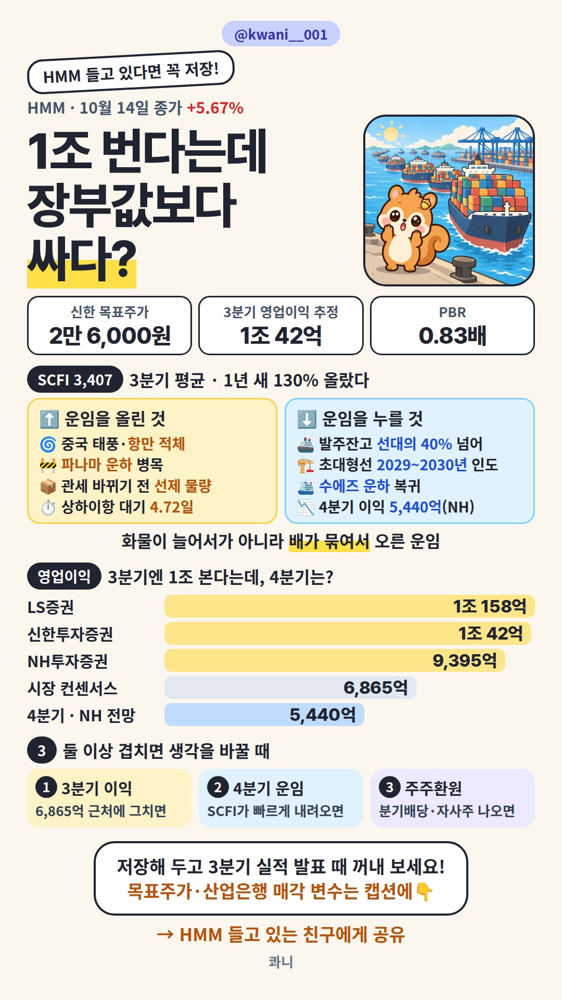
HMM 들고 있는데 '1조 번다는데 왜 이렇게 싸지?' 싶었던 분, 꼭 저장해 두세요👀 HMM이 10월 14일 5.67% 오른 2만 3,300원에 마감했어요. 신한투자증권이 3분기 영업이익을 1조 42억원으로 보고 목표주가를 2만 6,000원으로 올린 날이에요. 그런데 PBR은 0.83배, 장부값보다 낮게 거래돼요. 그래서 운임과 할인을 한 장에 정리했어요. 📌 운임은 왜 올랐나 3분기 평균 SCFI는 3,407포인트로 1년 전보다 130% 올랐어요. 신한은 관세 변경 전 선제 물량, 중국 태풍, 항만 적체, 파나마 운하 병목을 들었어요. NH투자증권은 상하이항 대기 시간이 2월 1.85일에서 4.72일로 길어진 점을 짚었어요. 화물이 늘었다기보다 배가 묶여서 오른 운임이에요. 📌 언제 꺾일 수 있나 LS증권은 발주잔고가 현존 선대의 40%를 웃돌아 2029년까지 공급 부담이 이어진다고 봤어요. 8월부터 주문한 초대형선은 2029~2030년에 들어오고, 수에즈 운하로 배가 돌아오면 배가 남아요. NH투자증권이 본 4분기 영업이익은 5,440억원이에요. 📌 장부값보다 싼 까닭 산업은행과 한국해양진흥공사가 지분 70.5%를 들고 있고, 산업은행은 하반기 매각 구조를 검토해요. 언제 어떤 값에 팔릴지 몰라 할인이 붙어요. 📌 목표주가 대신 2만 9,000원, 신한·LS 2만 6,000원, NH 2만 2,000원으로 네 곳 평균 2만 5,750원이에요. 📌 생각을 바꿀 조건 3분기 영업이익이 6,865억원 근처에 그치는지, SCFI가 빠르게 내려오는지, 분기배당·자사주 발표가 나오는지. 하나면 지켜보고, 둘 이상 겹치면 판단을 바꿀 때예요. 저장해 두고 3분기 실적 발표 때 꺼내 보세요! 👉 해운주 정리를 계속 받아 보려면 @kwani__001 팔로우 #HMM #HMM주가 #컨테이너운임 #SCFI #해운주
📌 핵심 요약 👇 ✔️ HMM 목표가가 2만 6,000원이 됐어요 ✔️ HMM 3분기 이익은 1조로 봤어요 ✔️ 발주잔고는 선대의 40% 넘어요 💬 운임, 버틴다 vs 꺾인다? 👉 HMM 주주에게 공유해 주세요 👉 자세한 건 프로필 블로그 링크에서!
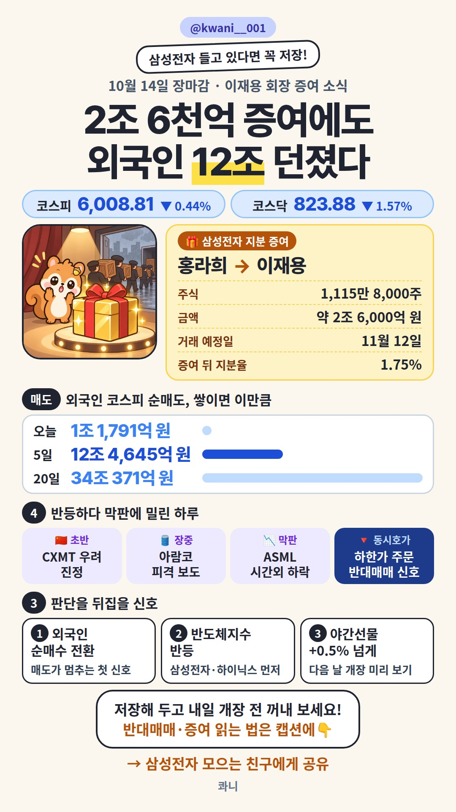
삼성전자 들고 있는데 '좋은 소식이 나왔는데 왜 또 빠지지?' 싶었던 분, 꼭 저장해 두세요👀 10월 14일 코스피는 0.44% 내린 6,008.81, 코스닥은 1.57% 내린 823.88로 마감했어요. 5거래일 연속 하락이에요. 홍라희 명예관장이 이재용 회장에게 삼성전자 지분 약 2조 6,000억 원어치를 증여한다는 소식도 못 막았어요. 그래서 증여와 외국인 매도, 막판 하한가 주문을 한 장에 정리했어요. 📌 증여는 이렇게 읽어요 1,115만 8,000주(지분 0.17%)를 11월 12일 넘겨받으면 이 회장 지분율은 1.75%가 돼요. 배당이 늘 수 있다는 기대를 키웠지만, 오늘은 ASML 여파의 반도체 매물이 더 셌어요. 📌 하한가 주문이 왜 신호냐면요 하한가로라도 팔겠다는 주문은 신용 반대매매가 시작됐다는 뜻으로 읽혀요. 빚내 산 주식이 담보 부족에 걸리면 증권사가 값을 가리지 않고 팔거든요. 신용융자 잔고가 34조 2,887억 원으로 높아, 더 빠지면 반대매매가 꼬리를 물 수 있어요. 📌 받아 줄 손도 약해요 기관이 오늘 8,119억 원을 샀지만 5일 누적으론 순매도라 방어력이 줄었어요. 📌 그래도 패닉은 아니에요 D램 현물가는 70.50달러로 그대로라, 투자심리 조정에 가깝다는 해석이에요. 📌 판단을 뒤집을 신호 ① 외국인이 순매수로 돌아서면 매도가 멈추는 첫 신호예요. ② 필라델피아 반도체지수가 반등하면 삼성전자·SK하이닉스가 먼저 따라가요. ③ 코스피 야간선물이 0.5% 넘게 오르면 다음 날 개장을 미리 알려 줘요. 📌 어제 신호는요 '코스피 종가 6,000선 하회'는 6,008.81로 턱걸이해 발동하지 않았어요. 저장해 두고 내일 개장 전 꺼내 보세요! 👉 매일 장마감 핵심은 @kwani__001 팔로우 #코스피 #장마감 #외국인순매도 #반대매매 #삼성전자
📌 핵심 요약 👇 ✔️ 코스피 6,008로 마감했어요 ✔️ 외국인 5일째 팔았어요 ✔️ 오늘 밤 CPI를 보세요 💬 오늘 밤 CPI 웃돌까요? 🙋/🙅 👉 주식하는 친구에게 공유해 주세요 👉 자세한 건 프로필 블로그 링크에서!
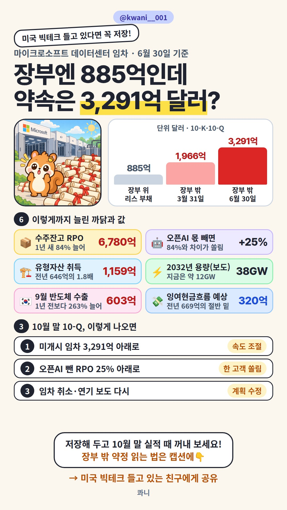
마이크로소프트 들고 계신데 '빚은 별로 없는 회사'라고만 알았던 분, 꼭 저장해 두세요👀 재무상태표의 리스 부채는 885억 달러예요. 그런데 10-K 리스 주석을 열면 아직 시작 안 된 데이터센터 임차가 3,291억 달러 적혀 있어요(6월 30일 기준). 그래서 장부 안과 밖을 한 장에 정리했어요. 📌 장부 밖 약정 읽는 법 계약은 했지만 임차가 시작되지 않아 부채에 안 잡힌 돈이에요. 시작하는 날 리스 부채로 올라가요. 시작 시점은 2027~2033 회계연도, 기간은 1년에서 20년이에요. 숨긴 돈은 아니고, 주석에 금액이 그대로 있어요. 📌 석 달 새 1.7배 3월 말 1,966억 달러에서 한 분기에 1,325억 달러 늘었어요. 다만 이번 10-K엔 '일부 계약은 조건이 충족돼야 한다'는 문구가 새로 붙어, 확정된 지출로 읽으면 안 돼요. 📌 서두르는 까닭 상업용 잔여 계약(RPO)이 6,780억 달러로 84% 늘었어요. 그런데 오픈AI를 빼면 25%예요. 그 차이가 한 고객에 기댄 크기예요. 📌 한국 쪽 9월 반도체 수출은 603억 달러로 263% 늘었어요. 마이크로소프트 한 곳이 만든 숫자는 아니고, 하이퍼스케일러 여럿이 같이 짓고 빌리는 중이에요. 📌 값도 커져요 2027 회계연도 잉여현금흐름 예상치는 약 320억 달러로, 전년의 절반에 못 미쳐요. 건물이 제때 서지 않으면 임차 시작도, 서버·메모리가 들어갈 때도 밀려요. 하나만 나오면 지켜보고, 둘 이상 겹치면 확장이 이어진다는 판단을 되돌릴 때예요. 저장해 두고 10월 말 실적 때 꺼내 보세요! 👉 미장 빅테크 숫자는 @kwani__001 팔로우 #마이크로소프트 #데이터센터 #미국주식 #반도체수출 #AI인프라
📌 핵심 요약 👇 ✔️ 마이크로소프트 임차가 1.7배예요 ✔️ 장부 밖 약정이 부채의 3.7배예요 ✔️ 9월 반도체 수출은 603억 달러예요 💬 다음 분기, 늘까 vs 줄까? 👉 미장 하는 친구에게 공유해 주세요 👉 자세한 건 프로필 블로그 링크에서!
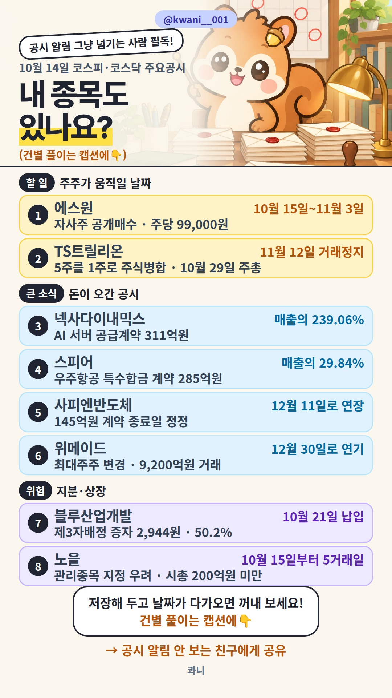
공시 알림 와도 그냥 넘겼다면, 내 종목이 있는지 꼭 저장해 두세요👀 10월 14일 코스피·코스닥 주요공시는 75건이었어요. 그중엔 거래가 멈추는 날, 응모가 끝나는 날이 정해진 공시도 섞여 있죠. 그래서 주주가 챙길 여덟 건만 한 장에 정리했어요. 📌 할 일 에스원 — 주당 99,000원, 4,500억원 규모 자사주 공개매수예요. 10월 14일 종가보다 약 3.8% 높아요. 다만 응모가 몰리면 비율대로 나눠 사요. TS트릴리온 — 5주를 1주로 합쳐요. 10월 29일 주총 통과가 먼저고, 11월 12일~12월 4일 거래정지, 12월 7일 새 주식 상장이에요. 📌 돈이 오간 공시 넥사다이내믹스 — AI 서버 311억원, 매출의 239.06%예요. 다만 '상품 판매'라 이익은 따로 봐야 해요. 스피어 — 미국 우주항공 발사업체에 특수합금 285억원, 매출의 29.84%예요. 사피엔반도체 — 145억원 계약 종료일이 12월 11일로 늦춰져, 대금도 두 달쯤 늦게 들어와요. 위메이드 — 최대주주 변경이 12월 30일로 미뤄졌어요. 9,200억원 거래의 잔금이 남았어요. 📌 지분·상장 위험 블루산업개발 — 제3자배정 신주를 2,944원에 찍어요. 기존 주식의 50.2%라 지분이 묽어져요. 납입은 10월 21일이에요. 노을 — 시총 200억원 미만이 25거래일째예요. 10월 15일부터 5거래일 더 이어지면 관리종목 사유가 더해질 수 있어요. 📌 다시 볼 조건 에스원 공개매수신고서 조건, TS트릴리온 주총 결과, 노을 시총이에요. 둘 이상 겹치면 날짜와 손익 계산을 다시 해 보세요. 저장해 두고 날짜가 다가오면 꺼내 보세요! 👉 매일 주요공시 정리는 @kwani__001 팔로우 #주요공시 #공개매수 #주식병합 #관리종목 #공시
📌 핵심 요약 👇 ✔️ 에스원 공개매수는 11월 3일까지예요 ✔️ TS트릴리온은 5주가 1주가 돼요 ✔️ 노을은 관리종목 문턱이에요 💬 스친들 종목도 있어요? 🙋 / 🙅 👉 에스원 주주에게 공유해 주세요 👉 자세한 건 프로필 블로그 링크에서!
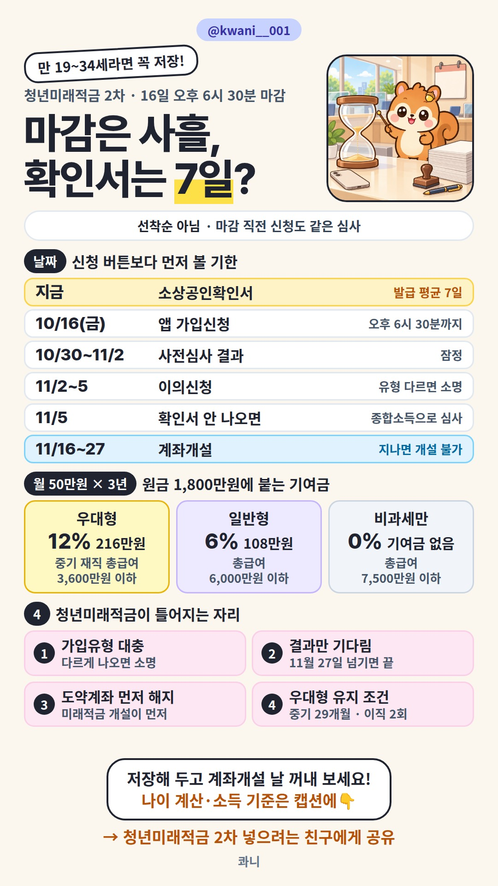
청년미래적금 2차, 마감 사흘 남았다고 손 놓으려던 분 꼭 저장해 두세요👀 10월 16일(금) 오후 6시 30분이면 2차 신청이 닫혀요. 마감이 코앞이면 이미 늦은 것 같지만, 청년미래적금은 선착순이 아니에요. 정작 시간이 걸리는 건 앱이 아니라 서류 쪽이라 한 장에 정리했어요. 📌 늦지 않은 까닭 금융위원회는 신청 순서와 관계없이 심사한다고 안내했어요. 16일 오후 6시 29분에 넣어도 첫날 넣은 사람과 같은 줄이에요. 다만 카카오뱅크는 2차에서 10만좌까지만 받아요. 다른 13곳은 한도가 없어요. 📌 서두를 곳은 확인서 소상공인으로 넣으려면 신청 전에 소상공인확인서를 받아 둬야 해요. 발급에 평균 약 7일이 걸리고, 사업장이 여럿이면 모두 필요해요. 11월 5일(잠정)까지 안 나오면 매출이 아니라 종합소득 기준으로 심사해요. 📌 나이는 계좌개설 날로 재요 대상은 1991년 11월 17일생~2007년 11월 27일생이에요. 신청일이 아니라 계좌개설 기간(11월 16~27일)으로 나이를 봐요. 병역은 최대 6년까지 빼고 계산해요. 📌 소득은 2025년 기준 총급여 7,500만원 이하에 가구 중위소득 200% 이하를 함께 채워야 해요. 월 50만원을 3년 넣으면 일반형 6%는 108만원, 우대형 12%는 216만원이 붙어요(이자 뺀 값). 연매출 1억원 이하 소상공인도 우대형이에요. 📌 생각을 바꿀 조건 2차 기간 연장, 2027년 예산안 확정(우대형 15% 안), 3차 일정 발표. 둘 이상 겹치면 판단을 다시 할게요. 저장해 두고 계좌개설 날 꺼내 보세요! 👉 청년 금융 정리를 계속 받아 보려면 @kwani__001 팔로우 #청년미래적금 #청년미래적금2차 #소상공인확인서 #정부기여금 #청년도약계좌
📌 핵심 요약 👇 ✔️ 청년미래적금은 선착순이 아니에요 ✔️ 2차 신청은 16일 마감이에요 ✔️ 소상공인확인서는 평균 7일 걸려요 💬 2차 신청했어요? 🙋 / 🙅 👉 청년 친구에게 공유해 주세요 👉 자세한 건 프로필 블로그 링크에서!
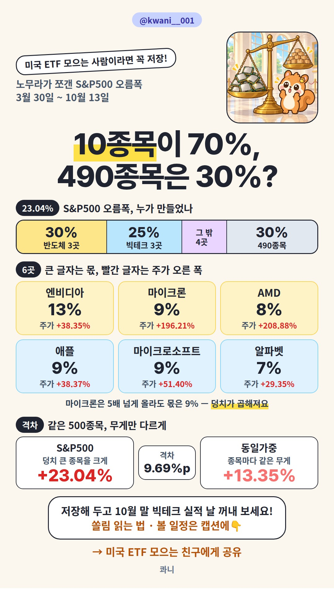
지수는 사상 최고인데 내 미국주식은 덜 올랐다 싶었던 분, 꼭 저장해 두세요👀 S&P500은 3월 30일 이후 10월 13일까지 23.04% 올랐어요. 그런데 노무라가 이 오름폭을 종목별로 쪼개 보니, 약 70%를 단 10개 종목이 만들었어요. 나머지 490개 종목 몫은 약 30%예요. 그래서 한 장에 정리했어요. 📌 사진 속 숫자 읽는 법 카드의 13% · 9%는 주가가 오른 폭이 아니라, 지수 오름폭 가운데 그 종목이 만든 몫이에요. S&P500은 시가총액이 큰 종목에 큰 무게를 싣는 지수라, 같은 10%를 올라도 덩치가 큰 종목이 지수를 더 밀어 올려요. 📌 많이 오른 순서 ≠ 몫의 순서 마이크론은 196.21%, AMD는 208.88% 올랐지만 몫은 9%, 8%예요. 38.35% 오른 엔비디아가 13%로 1위예요. 기여도는 오른 폭에 무게를 곱한 값이라서예요. 📌 반도체 세 곳 = 490개 종목 엔비디아 13%, 마이크론 9%, AMD 8%를 더하면 30%로 나머지 490개 종목 몫과 맞먹어요. 데이터센터를 짓는 마이크로소프트 9%, 알파벳 7%까지 넣으면 다섯 곳이 46%예요. AI 설비투자 한 줄기의 오름세인 셈이에요. 📌 동일가중과 격차 9.69%p 500개 종목에 같은 무게를 싣는 동일가중 지수는 같은 기간 13.35% 올랐어요. 8월 13일 고점보다는 4.16% 낮은데, S&P500은 10월 6일 사상 최고 종가를 썼어요. 📌 쏠림 장에서 볼 것 ① 10월 28~29일 빅테크 실적에서 설비투자를 또 늘리는지 ② 11월 3일 AMD 실적이 기대만큼 나오는지 ③ 동일가중과 격차가 좁혀지는지(번짐) 벌어지는지(더 쏠림) 하나만 나오면 지켜보고, 둘 이상 겹치면 생각을 바꿀 때예요. 저장해 두고 빅테크 실적 날 꺼내 보세요! 👉 매일 미장 핵심은 @kwani__001 팔로우 #S&P500 #미국증시 #엔비디아 #마이크론 #AI반도체
📌 핵심 요약 👇 ✔️ S&P500 상승의 70%가 10종목이에요 ✔️ 반도체 세 곳 몫이 30%예요 ✔️ 동일가중은 13.35% 올랐어요 👉 자세한 건 프로필 블로그 링크에서!
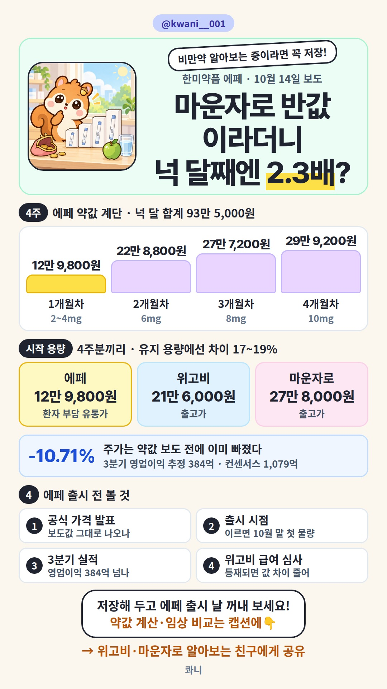
위고비·마운자로 알아보다 '월 12만원대 비만약' 소식에 솔깃했던 분, 꼭 저장해 두세요👀 10월 14일 오후, 한미약품 비만약 에페의 첫 달 약값이 12만 9,800원이라는 보도가 나왔어요. '마운자로 반값'이라는 말이 붙었는데, 넉 달째 값까지 보면 이야기가 달라져요. 그래서 한 장에 정리했어요. 📌 사진 속 약값 읽는 법 에페는 일주일에 한 번 맞는 주사라 한 달에 펜 네 개를 써요. 용량을 2mg에서 10mg까지 올리면 한 달 값도 계단처럼 올라요. 첫 달은 2mg 두 개와 4mg 두 개를 더한 값이에요. 넉 달째 10mg은 첫 달의 2.3배, 넉 달을 다 더하면 93만 5,000원이에요. 📌 '반값'은 시작 용량 이야기 시작 용량에선 위고비보다 37%, 마운자로보다 53% 싸요. 유지 용량에선 그 차이가 17%, 19%로 줄어요. 위고비·마운자로는 출고가, 에페는 환자 부담 유통가라 기준도 달라요. 📌 싼 값 뒤의 임상 에페는 40주 동안 평균 9.02% 줄었어요. 위고비는 68주 14.9%, 마운자로는 72주 20.9%였는데, 시험 기간과 대상이 달라 그대로 견주긴 어려워요. 위장관 부작용으로 약을 끊은 비율은 에페 1.2%, 위고비 4.3%였어요. 📌 주가는 왜 거꾸로 갔나 가격 보도 전 오전에 이미 빠졌어요. 키움증권이 3분기 영업이익을 384억원으로 추정했는데, 컨센서스 1,079억원의 3분의 1 남짓이에요. 오후 3시 20분 무렵 40만 4,500원, 전날보다 10.71% 낮았어요. 📌 출시 전 볼 것 한미약품 공식 가격, 3분기 실적, 위고비 급여 심사예요. 둘 이상 겹치면 지금 그림을 다시 그려야 해요. 저장해 두고 에페 출시 날 꺼내 보세요! 👉 제약·바이오 이슈 정리는 @kwani__001 팔로우 #한미약품 #에페 #비만약 #위고비 #마운자로
📌 핵심 요약 👇 ✔️ 에페 첫 달은 12만 9,800원 ✔️ 에페 넉 달째는 29만 9,200원 ✔️ 한미약품 주가는 보도 전 빠졌어요 💬 첫 달 12만원대면? 🙋 / 🙅 👉 위고비 맞는 친구에게 공유해 주세요 👉 자세한 건 프로필 블로그 링크에서!
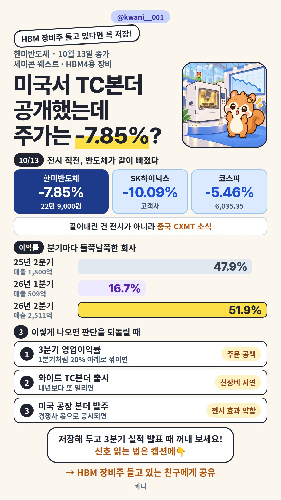
HBM 장비주 들고 있는데 '좋은 소식 났는데 왜 빠지지?' 싶었던 분, 꼭 저장해 두세요👀 한미반도체가 미국 샌프란시스코 세미콘 웨스트에서 HBM4용 TC본더4를 공개했어요. 그런데 전시 직전인 10월 13일 주가는 7.85% 빠진 22만 9,000원에 마감했어요. 그래서 주가가 따로 간 까닭과 다음에 볼 신호를 한 장에 정리했어요. 📌 주가를 끌어내린 건 전시가 아니에요 중국 창신메모리(CXMT)가 새 칩 구조 개발에서 '상당한 진전'을 이뤘다고 밝힌 날이에요. 코스피는 5.46%, SK하이닉스는 10.09% 빠졌어요. 다만 CXMT 발표에는 HBM 이야기가 없었어요. 장비 주문은 고객사 투자에서 나와서, 고객사 주가가 흔들리면 장비주도 같이 흔들려요. 📌 미국으로 간 까닭 SK하이닉스가 인디애나에 38억 7,000만 달러를 들여 HBM 패키징 공장을 짓고 있어요(2028년 하반기 가동 목표). 다만 그 공장에 들어갈 본더를 누가 납품할지는 아직 공시된 게 없어요. 전시는 주문이 아니에요. 📌 이익률 읽는 법 2분기 영업이익률 51.9%는 100원어치를 팔아 52원 가까이 남긴 셈이에요. 그런데 1분기는 16.7%였어요. 주문이 몰린 분기와 빈 분기의 차이가 큰 회사라, 3분기 숫자가 중요해요. 📌 신호 읽는 법 하나만 나오면 아직 지켜보는 단계예요. 둘 이상 겹치면 미국 확장이 주문으로 이어진다는 판단을 되돌릴 때예요. 미국 공장 발주는 단일판매·공급계약 공시로 나와요. 저장해 두고 3분기 실적 발표 때 꺼내 보세요! 👉 반도체 이슈 정리는 @kwani__001 팔로우 #한미반도체 #TC본더 #HBM4 #반도체장비 #세미콘웨스트
📌 핵심 요약 👇 ✔️ 한미반도체, 미국 전시 나갔어요 ✔️ 한미반도체 주가는 7.85% 빠졌어요 ✔️ 한미반도체 이익률은 51.9%예요 💬 3분기 50% 넘는다 vs 못 넘는다? 👉 HBM 장비주 친구에게 공유해 주세요 👉 자세한 건 프로필 블로그 링크에서!
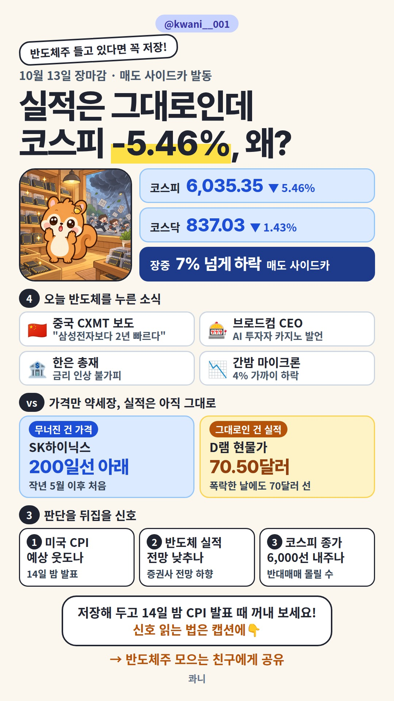
반도체주 들고 있는데 '실적은 멀쩡하다는데 왜 이렇게 빠지지?' 싶었던 분, 꼭 저장해 두세요👀 10월 13일 코스피는 5.46% 내린 6,035.35, 코스닥은 1.43% 내린 837.03으로 마감했어요. 장중엔 7% 넘게 빠지며 매도 사이드카까지 걸렸어요. 그런데 반도체 실적은 아직 그대로예요. 그래서 오늘을 누른 소식과 판단을 뒤집을 신호를 한 장에 정리했어요. 📌 소문 같은 뉴스에 큰손까지 빠졌어요 중국 CXMT가 연내 첨단 칩을 낸다는 보도가 '삼성전자보다 2년 빠르다'는 제목으로 퍼졌어요. 자사주 매입이라는 큰손까지 빠진 뒤라 반도체가 크게 무너졌어요. 📌 가격과 실적, 이렇게 읽어요 주가가 폭락한 날에도 D램 현물가는 70.50달러로 70달러 선을 지켰어요. 중국 경쟁 우려가 아직 실제 가격엔 번지지 않았다는 뜻이에요. 그래서 뉴스 무게에 비해 낙폭이 너무 컸다는 평가가 나와요. 다만 공포탐욕지수는 중립 근처라 바닥 신호로 보기엔 일러요. 📌 신호 읽는 법 ① 14일 밤 미국 CPI가 예상을 웃돌면 금리가 다시 오르고 외국인 매도가 길어질 수 있어요. ② 증권사들이 반도체 실적 전망을 낮추면 실적이 받쳐주는 반등도 기대하기 어려워요. ③ 코스피가 종가로 6,000선을 내주면 반대매매가 몰릴 수 있어요. 📌 어제 신호는요 '코스피 200일선 종가 하회'는 발동했어요. 지수는 약세장에 들어섰다고 봐야 해요. 저장해 두고 14일 밤 CPI 발표 때 꺼내 보세요! 👉 매일 장마감 핵심은 @kwani__001 팔로우 #코스피 #장마감 #매도사이드카 #SK하이닉스 #미국CPI
📌 핵심 요약 👇 ✔️ 코스피 5.46% 빠졌어요 ✔️ D램 가격은 그대로예요 ✔️ 6,000선 종가를 보세요 💬 내일 밤 CPI 웃돌까요? 🙋/🙅 👉 주식하는 친구에게 공유해 주세요 👉 자세한 건 프로필 블로그 링크에서!
대북주 뉴스 보고 사 볼까 했다면, 장중 24% 말고 종가부터 보세요. 꼭 저장해 두세요👀 영상 속 최대리(가정)는 대북주 뉴스를 챙겨 보는 30대 직장인이에요. 10월 13일 코스피는 5.46% 빠졌는데, 인디에프는 장중 24.48%까지 뛰었어요. 하지만 종가는 3.44%였어요. 고가 4,525원에 샀다면 종가 3,760원까지 하루 만에 16.91% 손실이에요. 그래서 정리했어요. 📌 트럼프가 한 말 12일(현지시간) 다음 달 아시아 순방 중 김정은 위원장을 만나느냐는 질문에 "그럴 수도 있다"고 답했어요. 약속이 아니라 가능성이에요. 날짜·장소는 정해지지 않았고, 북한은 직접 답하지 않았어요. 📌 고가와 종가 사이 코데즈컴바인도 장중 12.50%까지 뛰었다가 0.60%로 마감했어요. 현대엘리베이터는 1.00% 올랐고 아난티는 1.83% 내렸어요. 다 같이 뛴 날은 아니었어요. 📌 기대만으로 움직이는 까닭 금강산 관광은 2008년, 개성공단은 2016년 2월에 멈췄어요. 관광·개성공단·철도 어느 갈래도 지금 매출로 확인된 곳은 없어요. 📌 불발된 날은 2025년 10월 29일 회동이 불발되자 코데즈컴바인 18.97%, 아난티 13.22%, 인디에프 12.71%가 빠졌어요. 📌 다음 소식엔 11월 16~19일 마닐라 아세안·선전 APEC 무렵이 갈림길이에요. 백악관 일정 발표, 북한의 직접 답, 회동 불발 가운데 하나면 지켜보고, 둘 이상 겹치면 판단을 다시 세울 때예요. 숫자는 장중 고가 말고 종가로 보세요. 저장해 두고 회담 소식 뜨는 날 꺼내 보세요! 👉 매일 장마감 핵심은 @kwani__001 팔로우 #남북경협주 #대북주 #트럼프김정은 #인디에프 #개성공단
📌 핵심 요약 👇 ✔️ 트럼프, 김정은 만남 열어 뒀어요 ✔️ 인디에프 장중 24.48% 뛰었어요 ✔️ 인디에프 종가는 3.44%예요 👉 자세한 건 프로필 블로그 링크에서!
삼성전자·코스피 들고 있는데 오늘 계좌 보고 놀란 분 꼭 저장해 두세요👀 10월 13일 오전 9시 47분, 코스피200 선물이 5.08% 밀리며 두 달 만에 매도 사이드카가 걸렸어요. 코스피는 오후 1시 5,976.80으로 6.38% 빠져 6,000선 아래로 내려왔고, 종목은 828개가 내리고 71개만 올랐어요. 왜 하필 지금일까요? 그래서 정리했어요. 📌 매도 사이드카란 코스피200 선물이 5% 넘게 빠져 1분 이어지면 프로그램 매도호가가 5분 멈춰요. 사람 주문은 그대로예요. 시장 전체를 세우는 건 서킷브레이커로, 코스피가 8% 넘게 빠져 1분 이어지면 모든 종목 매매가 20분 멈춰요. 📌 다섯 거래일 내리 빠진 까닭 하루 200만 주, 5,000억원 안팎씩 사던 삼성전자 15조원 자사주 매입이 10월 6일 끝났어요. 코스피는 그날부터 다섯 거래일 내리 빠져 10월 2일 7,003.74에서 14.66% 내려왔어요. 다만 매입 종료가 하락의 전부라는 근거는 없어요. 📌 외국인 순매도 200조원 외국인은 올해 코스피에서 200조원 넘게 팔았고, SK하이닉스·삼성전자 두 종목만 173조원이 넘어요. 오늘 SK하이닉스는 8.85%, 삼성전자는 6.99% 내렸어요. 📌 반도체가 더 빠진 까닭 중국 창신메모리(CXMT)가 서버용 DDR5를 내놓을 계획이라는 소식이 심리를 흔들었어요. 다만 아직 양산 전이에요. 📌 다음 급락 때 볼 것 코스피가 8% 넘게 빠져 1분 이어지는지, SK하이닉스 40조 43억원 자사주 매입(11월 19일까지)이 끝나는지, 외국인 순매도가 다음 거래일에도 1조원을 넘는지예요. 둘 이상 겹치면 하루짜리 충격으로 보기 어려워요. 저장해 두고 다음 급락 때 꺼내 보세요! 👉 매일 장마감 핵심은 @kwani__001 팔로우 #매도사이드카 #코스피 #서킷브레이커 #삼성전자 #외국인순매도
📌 핵심 요약 👇 ✔️ 코스피 매도 사이드카가 떴어요 ✔️ 삼성전자 자사주 매입은 끝났어요 ✔️ 코스피 8% 하락이 다음 선이에요 💬 6천 회복, 된다 vs 안 된다? 👉 삼성전자 주주에게 공유해 주세요 👉 자세한 건 프로필 블로그 링크에서!
좋은 소식 났는데 LG씨엔에스 계좌는 빠진 분 꼭 저장해 두세요👀 10월 13일 LG씨엔에스가 앤트로픽 클로드 파트너 등급에서 국내 최초로 '프리퍼드'를 받았다는 보도가 나왔어요. 그런데 같은 날 주가는 장중 6만 3,500원으로 4.22% 내렸어요. 좋은 소식에 주가는 왜 거꾸로 갔을까요? 그래서 정리했어요. 📌 프리퍼드 등급이란 앤트로픽 공식 파트너 프로그램의 등급으로, 받은 곳이 전 세계 50곳 미만이에요(한국경제). 클로드 전문가 140명과 구축 사례 20건이 근거였고, 6월 9일 맺은 클로드 엔터프라이즈 계약이 바탕이에요. 다만 등급은 자격이지 매출이 아니에요. 📌 이익이 줄어든 까닭 2분기 영업이익은 1,279억원으로 1년 전보다 9.2% 줄었어요. 매출은 4.2% 늘었지만 피지컬AI 투자를 늘렸고, 계열사 프로젝트가 하반기로 밀렸어요. 그래도 6월 말 수주잔고는 5조 3,473억원으로 쌓였어요. 📌 하반기 큰 숫자 둘 GPU 3,814억원 취득을 결정했고, LG전자와 2,578억원 MS 코파일럿 계약을 맺었어요. 다만 GPU는 들여온 뒤부터 감가상각이 붙어 빌려 쓸 고객을 채워야 해요. 📌 기관이 팔고 개인이 받았어요 12일까지 5거래일 동안 기관은 161,685주를 팔고 개인은 189,029주를 샀어요. 기관은 4거래일 연속 순매도예요. 증권사 세 곳 목표주가 평균은 9만 4,000원이지만, 이번 하락 전에 나온 숫자예요. 📌 3분기 실적 때 볼 것 영업이익률이 추정 8.3%를 지키는지, 클로드 계약이 공시로 찍히는지, GPU가 언제 매출이 되는지예요. 저장해 두고 3분기 실적 날 꺼내 보세요! 👉 기업분석 정리는 @kwani__001 팔로우 #LG씨엔에스 #앤트로픽 #클로드 #AI데이터센터 #IT서비스
📌 핵심 요약 👇 ✔️ LG씨엔에스, 등급 국내 1호예요 ✔️ LG씨엔에스 이익은 9.2% 줄었어요 ✔️ 기관은 4거래일 연속 팔았어요 💬 등급, 실적 된다 vs 아직? 1 / 2 👉 LG씨엔에스 주주에게 공유해 주세요 👉 자세한 건 프로필 블로그 링크에서!
간밤 미장, 지수는 빠졌다는데 내 계좌는 괜찮았던 분 꼭 저장해 두세요👀 10월 12일(현지시간) S&P500은 0.06%, 나스닥은 0.44% 내렸어요. 그런데 S&P500 업종 11개를 하나씩 세어 보면 8개가 올랐어요. 업종 대부분이 오른 날 지수는 왜 밀렸을까요? 그래서 한 장에 정리했어요. 📌 업종은 올랐는데 지수가 빠진 까닭 S&P500은 시가총액이 큰 종목을 크게 반영해요. 덩치 큰 반도체·기술주가 내리면 작은 종목 여럿이 올라도 지수가 밀려요. 종목마다 같은 무게를 준 동일가중지수는 0.07% 올랐어요. 한 표씩 세면 오른 장, 덩치로 세면 내린 장이었던 거예요. 📌 마이크론이 빠진 까닭 중국 메모리 업체 창신메모리(CXMT)가 같은 면적에 더 많이 저장하는 새 메모리 설계에 진전이 있다고 밝혔어요. 시장은 경쟁이 세지는 신호로 받았고, 마이크론은 989.04달러로 1,000달러 선을 다시 내줬어요. SK하이닉스 ADR도 4.02% 내렸어요. 다만 CXMT 제품은 2026년 말 출시 목표라 아직 계획 단계예요. 📌 오른 쪽은 유가가 끌었어요 WTI가 2.06% 오른 93.74달러에 마감하며 에너지가 1.48%로 1등이었어요. 다만 유가 상승은 금리 부담으로 이어져 기술주에는 짐이 될 수 있어요. 📌 이번 주 볼 것 반도체지수가 12,000 아래로 가는지, WTI가 100달러를 넘는지, 10월 14일 밤 9시 30분(한국시간) 9월 CPI가 예상보다 높게 나오는지예요. 둘 이상 겹치면 업종이 고르게 버틴다는 판단을 거둬들일 때예요. 저장해 두고 CPI 발표 날 꺼내 보세요! 👉 매일 미장 마감 핵심은 @kwani__001 팔로우 #미국증시 #뉴욕증시 #마이크론 #S&P500 #미국CPI
📌 핵심 요약 👇 ✔️ S&P500 업종 8개가 올랐어요 ✔️ 마이크론은 3.88% 빠졌어요 ✔️ 동일가중지수는 올랐어요 💬 마이크론 들고 계세요? 🙋 / 🙅 👉 반도체주 친구에게 공유해 주세요 👉 자세한 건 프로필 블로그 링크에서!
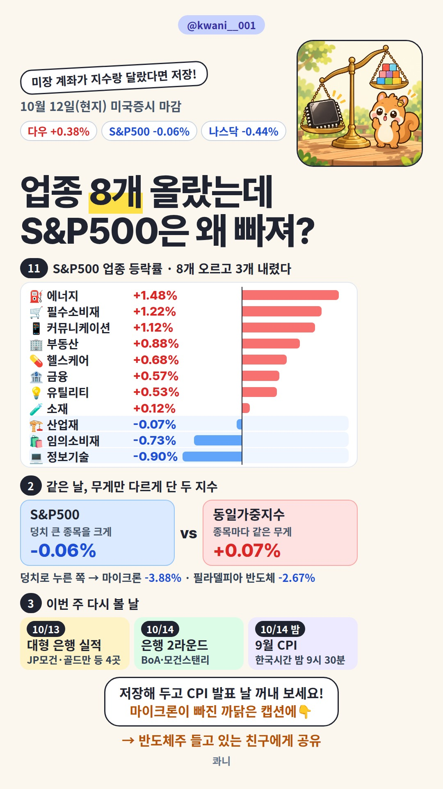
간밤 미장, 지수는 빠졌다는데 내 계좌는 괜찮았던 분 꼭 저장해 두세요👀 10월 12일(현지시간) S&P500은 0.06%, 나스닥은 0.44% 내렸어요. 그런데 S&P500 업종 11개를 하나씩 세어 보면 8개가 올랐어요. 업종 대부분이 오른 날 지수는 왜 밀렸을까요? 그래서 한 장에 정리했어요. 📌 업종은 올랐는데 지수가 빠진 까닭 S&P500은 시가총액이 큰 종목을 크게 반영해요. 덩치 큰 반도체·기술주가 내리면 작은 종목 여럿이 올라도 지수가 밀려요. 종목마다 같은 무게를 준 동일가중지수는 0.07% 올랐어요. 한 표씩 세면 오른 장, 덩치로 세면 내린 장이었던 거예요. 📌 마이크론이 빠진 까닭 중국 메모리 업체 창신메모리(CXMT)가 같은 면적에 더 많이 저장하는 새 메모리 설계에 진전이 있다고 밝혔어요. 시장은 경쟁이 세지는 신호로 받았고, 마이크론은 989.04달러로 1,000달러 선을 다시 내줬어요. SK하이닉스 ADR도 4.02% 내렸어요. 다만 CXMT 제품은 2026년 말 출시 목표라 아직 계획 단계예요. 📌 오른 쪽은 유가가 끌었어요 WTI가 2.06% 오른 93.74달러에 마감하며 에너지가 1.48%로 1등이었어요. 다만 유가 상승은 금리 부담으로 이어져 기술주에는 짐이 될 수 있어요. 📌 이번 주 볼 것 반도체지수가 12,000 아래로 가는지, WTI가 100달러를 넘는지, 10월 14일 밤 9시 30분(한국시간) 9월 CPI가 예상보다 높게 나오는지예요. 둘 이상 겹치면 업종이 고르게 버틴다는 판단을 거둬들일 때예요. 저장해 두고 CPI 발표 날 꺼내 보세요! 👉 매일 미장 마감 핵심은 @kwani__001 팔로우 #미국증시 #뉴욕증시 #마이크론 #S&P500 #미국CPI
📌 핵심 요약 👇 ✔️ S&P500 업종 8개가 올랐어요 ✔️ 마이크론은 3.88% 빠졌어요 ✔️ 동일가중지수는 올랐어요 💬 마이크론 들고 계세요? 🙋 / 🙅 👉 반도체주 친구에게 공유해 주세요 👉 자세한 건 프로필 블로그 링크에서!
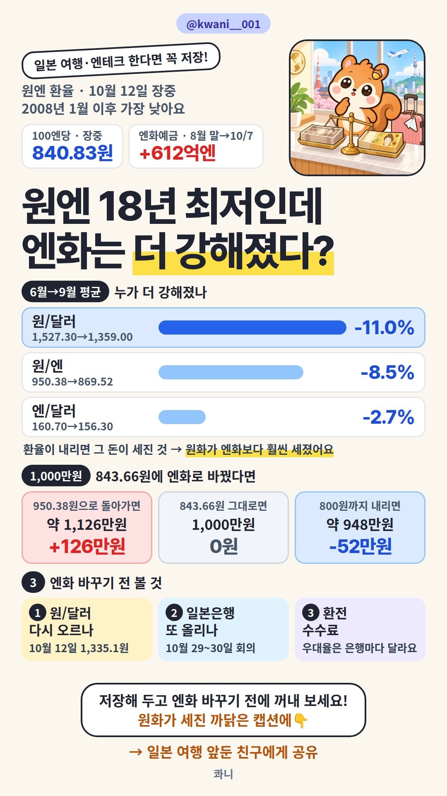
일본 여행 앞두고 '엔화 지금 바꿔도 되나' 고민하던 분, 꼭 저장해 두세요👀 원엔 환율이 10월 12일 장중 100엔당 840.83원까지 내려왔어요. 2008년 1월 이후 18년 만에 가장 낮아요. 은행 엔화예금도 한 달여 새 612억엔 불었고요. 그런데 숫자를 쪼개 보면 엔화는 오히려 달러보다 강해졌어요. 그래서 원엔 환율을 끌어내린 진짜 주인공과 엔화 바꾸기 전 볼 것을 한 장에 정리했어요. 📌 사진 속 막대 읽는 법 환율 숫자가 내리면 그 나라 돈이 세진 거예요. 6월→9월 평균 원/달러는 11.0%, 엔/달러는 2.7% 내렸어요. 둘 다 달러보다 세졌는데 원화가 훨씬 더 세져서 원엔 환율이 8.5% 내려온 거예요. 📌 원화가 세진 까닭 반도체 기업이 번 달러를 원화로 바꾸는 물량이 몰렸어요. 10월 12일 외국인이 코스피에서 2조142억원을 팔았는데도 원/달러는 1,335.1원으로 내렸어요. 📌 금리 올렸는데 엔화는 왜 일본은행이 9월 18일 기준금리를 1.25%로 올렸지만 엔화는 달러당 157엔대로 밀렸어요. 나랏빚이 200%를 넘어 더 조이기 어렵다는 관측이 엔화를 누른다는 설명이에요. 📌 2024년 여름엔 거꾸로 855.38원이던 원엔 환율이 일본은행 금리 인상 뒤 다섯 주 남짓 만에 949.49원, 11.0% 뛰었어요. 다만 이번엔 원화 강세 몫이 커서 같은 반등을 기대하긴 어려워요. 📌 엔화예금 넣기 전 손익은 이자보다 환율이 정해요. 환전 수수료 우대율도 거래 은행에서 꼭 확인하세요. 원/달러가 다시 오르는지, 일본은행이 10월 29~30일 회의에서 금리를 또 올리는지 같이 보세요. 저장해 두고 엔화 바꾸기 전에 꺼내 보세요! 👉 환율·증시 정리를 계속 받아 보려면 @kwani__001 팔로우 #원엔환율 #엔화예금 #엔화환율 #엔테크 #원화강세
📌 핵심 요약 👇 ✔️ 원엔 환율이 18년 만에 최저예요 ✔️ 엔화예금이 612억엔 늘었어요 ✔️ 원화가 엔화보다 더 강해졌어요 💬 엔화 벌써 바꾸셨어요? 🙋 / 🙅 👉 여행 갈 친구에게 공유해 주세요 👉 자세한 건 프로필 블로그 링크에서!
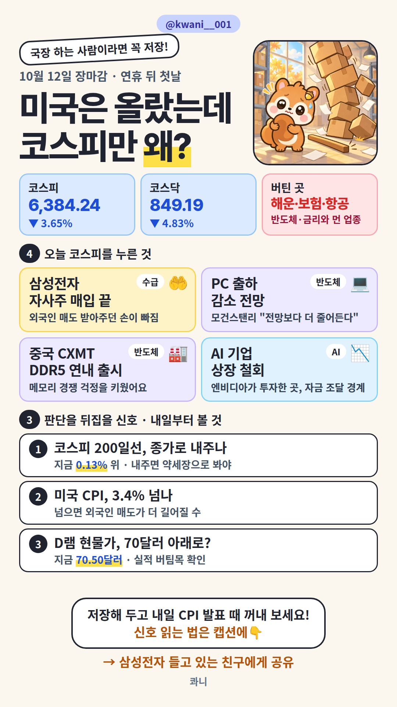
연휴 끝나고 계좌 열었다가 '미국은 올랐다던데 왜?' 싶었던 분, 꼭 저장해 두세요👀 연휴 뒤 첫날 코스피는 3.65% 내린 6,384.24, 코스닥은 4.83% 내린 849.19로 마감했어요. 연휴 동안 미국 증시는 오히려 소폭 올랐는데 우리만 빠졌어요. 그래서 오늘을 누른 것과 내일부터 볼 신호를 한 장에 정리했어요. 📌 실적이 꺾인 게 아니었어요 외국인이 파는 물량을 받아주던 삼성전자 자사주 매입이 끝났어요. 지난주 이후 4거래일 연속 하락했는데, 그중 3거래일이 매입이 끝난 뒤였어요. 새 자금도 제한적이라 같은 매도에도 훨씬 크게 밀렸어요. 실적 전망 자체는 아직 그대로예요. 📌 반도체 노이즈가 겹쳤어요 모건스탠리는 PC 출하량이 당초 전망보다 더 크게 줄 거라고 봤어요. 메모리 값이 너무 오르자 완제품 수요가 영향을 받기 시작했다는 신호로 읽힐 수 있어요. 미국 10년물 5.24%, 30년물 5.60%의 고금리도 성장주를 누르고 있어요. 📌 신호 읽는 법 ① 코스피는 200일선 0.13% 위에서 겨우 버텼어요. 60일선·20일선에 이어 마지막 장기선까지 종가로 내주면 조정이 아니라 약세장으로 봐야 해요. ② 금리 인하 확률이 46%에 그치는데 CPI까지 3.4%를 넘으면 10년물이 다시 오르고 외국인 매도가 길어질 수 있어요. ③ D램 현물가는 70.50달러로 오르는 중이에요. 70달러 아래로 내려가면 수요 둔화가 가격으로 번지기 시작했다는 뜻이에요. 📌 다음 고비 SK하이닉스 자사주 매입까지 끝나면 두 대형주를 받쳐주던 손이 모두 빠져요. 주주환원이 다시 발표되는지가 수급 공백을 메울 열쇠예요. 저장해 두고 내일 CPI 발표 때 꺼내 보세요! 👉 매일 장마감 핵심은 @kwani__001 팔로우 #코스피 #코스닥 #장마감 #삼성전자 #미국CPI
📌 핵심 요약 👇 ✔️ 코스피 3.65% 빠졌어요 ✔️ 자사주 매입이 끝났어요 ✔️ 200일선 바로 위예요 💬 내일 CPI 3.4% 넘을까요? 🙋/🙅 👉 주식하는 친구에게 공유해 주세요 👉 자세한 건 프로필 블로그 링크에서!
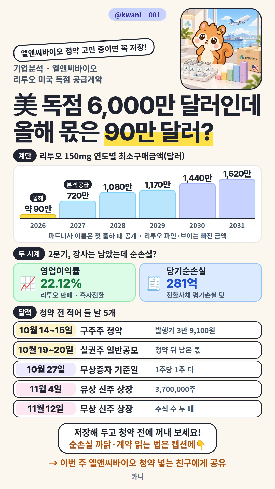
엘앤씨바이오 들고 있는데 이번 주 청약 넣을지 고민인 분, 꼭 저장해 두세요👀 10월 12일 리투오 미국 독점 공급계약 소식이 나왔어요. 5년 최소 6,000만 달러면 크게 들리죠. 그런데 계약을 펼치면 올해 몫은 약 90만 달러예요. 이틀 뒤엔 3만 9,100원짜리 유상증자 청약도 열려요. 그래서 계약의 계단, 실적의 두 시계, 청약 달력을 한 장에 정리했어요. 📌 계단 읽는 법 리투오 150mg의 해마다 최소구매금액이에요. 올해는 현지 의료진 교육에 쓰고, 본격 공급은 2027년 720만 달러부터예요. 리투오 파인·브이는 이 금액에 안 들어 있어요. 파트너사는 미국 병·의원 약 1만 7,000곳이 고객인데, 이름은 첫 출하 때 밝혀요. 📌 장사는 남는데 순손실인 까닭 2분기 영업이익은 86억원으로 흑자로 돌아섰어요. 리투오가 많이 팔리며 고정비가 나뉜 덕이에요. 순손실 281억원은 전환사채(CB) 평가손실 탓이에요. 주가가 오르면 CB를 주식으로 바꿀 권리의 값이 커져 장부에 손실로 잡혀요. 회사는 현금이 나가지 않는 손실이라고 했어요. 📌 달력 읽는 법 10월 27일 무상증자 기준일 무렵 권리락이 걸리면 시세창 주가가 절반 가까이로 보여요. 주식 수가 두 배가 된 만큼 값이 나뉜 거예요. 11월 4일엔 유상 신주가 상장돼 시장에 나올 물량이 늘어요. 📌 볼 것 미국 판매는 FDA 361 HCT/P 요건을 채워야 해요. 3분기 영업이익률이 20% 아래로 내려가는지도 봐요. 저장해 두고 청약 전에 꺼내 보세요! 👉 기업 공시 정리를 계속 받아 보려면 @kwani__001 팔로우 #엘앤씨바이오 #리투오 #스킨부스터 #유상증자 #무상증자
📌 핵심 요약 👇 ✔️ 美 계약은 최소 6,000만 달러예요 ✔️ 올해 몫은 90만 달러예요 ✔️ 청약은 10월 14~15일이에요 👉 청약 넣는 친구에게 공유해 주세요 👉 자세한 건 프로필 블로그 링크에서!
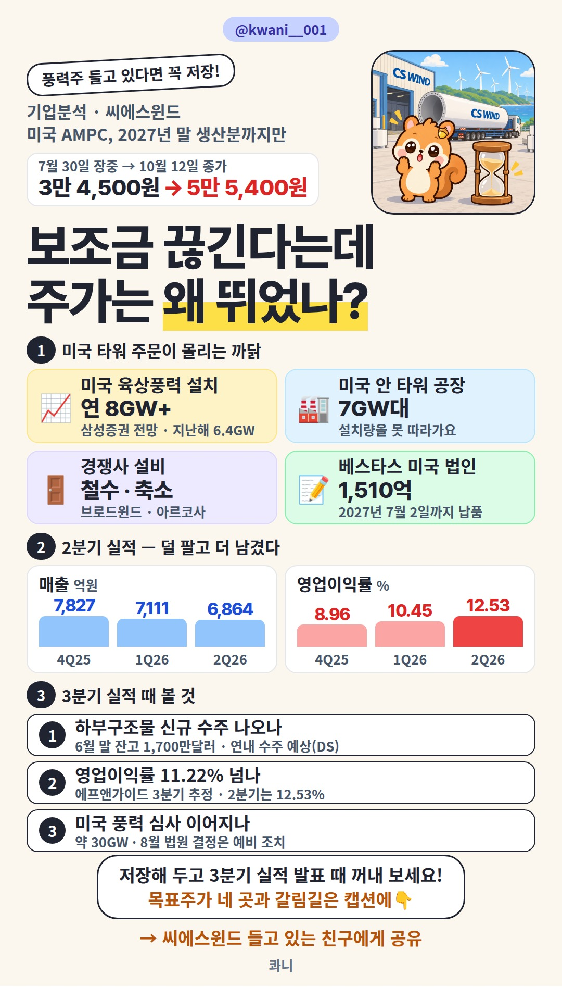
풍력주 들고 계시는데 '보조금 끝나면 악재 아냐?' 싶었던 분, 꼭 저장해 두세요👀 미국 풍력 보조금 AMPC는 2027년 말 생산·판매분까지만 붙어요. 그런데 씨에스윈드 주가는 7월 30일 장중 3만 4,500원에서 10월 12일 5만 5,400원까지 올라왔죠. 그래서 주문이 왜 몰리는지, 3분기에 무엇을 보면 되는지 한 장에 정리했어요. 📌 끝나는 날이 정해져서 앞당겨요 2028년부터 만든 타워에는 AMPC가 안 붙으니 그 전에 육상풍력 발주가 몰린다는 해석이에요. 삼성증권은 미국 설치량을 연 8GW 넘게 봤는데, 미국 안 타워 생산능력은 7GW대예요. 브로드윈드와 아르코사는 타워 설비를 줄였고요. 📌 사진 속 실적 읽는 법 매출은 두 분기 연속 줄었는데 영업이익률은 8.96%에서 12.53%로 올랐어요. 타워 비중이 77.5%로 커졌고, AMPC가 타워 부문 기타 매출(상반기 901억원)에 들어 이익률을 받쳤어요. 📌 증권사 목표주가 네 곳 메리츠 9만 3,000원, DS 8만 8,000원, 유진 8만원, NH 7만 9,000원, 평균 8만 5,000원이에요. 다만 세 곳은 7월 말 저점보다 앞서 나온 숫자예요. 📌 갈림길 앞당긴 주문은 뒤의 수요를 미리 쓴 것일 수도 있어요. 3분기 영업이익률이 10% 아래로 내려가거나, 연말까지 하부구조물 신규 수주가 없거나, 미국 국방부 풍력 심사가 다시 멈추면 판단을 되돌려야 해요. 저장해 두고 3분기 실적 발표 때 꺼내 보세요! 👉 기업분석 정리를 계속 받아 보려면 @kwani__001 팔로우 #씨에스윈드 #풍력타워 #AMPC #풍력주 #재생에너지
📌 핵심 요약 👇 ✔️ 미국 AMPC는 2027년 말 생산·판매분까지만 받아요 ✔️ 그 전에 미국 육상풍력 주문이 몰린다는 전망이에요 ✔️ 해상풍력 하부구조물 신규 수주는 아직이에요 👉 씨에스윈드 들고 있는 친구에게 공유해 주세요 👉 자세한 내용은 프로필의 블로그 링크에서 확인하세요!
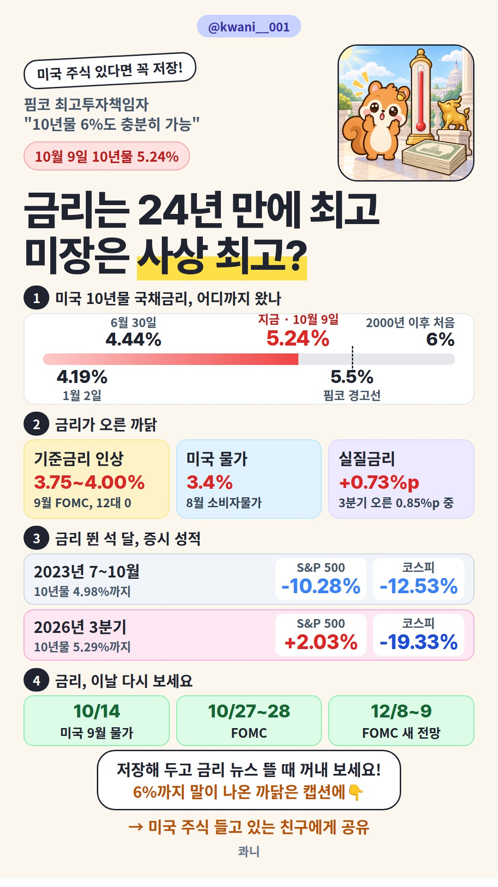
미국 주식 들고 계시는데 '금리가 이렇게 높은데 왜 안 빠지지?' 싶었던 분, 꼭 저장해 두세요👀 미국 10년물 국채금리가 10월 5일 5.31%, 2002년 이후 가장 높은 자리까지 왔어요. 그런데 S&P 500은 10월 6일 7,818.93으로 사상 최고 종가를 썼죠. 핌코 최고투자책임자는 "6%도 충분히 가능한 일"이라고 했어요. 그래서 금리가 어디까지 왔고, 언제 무엇을 보면 되는지 한 장에 정리했어요. 📌 사진 속 눈금 읽는 법 1월 2일 4.19%에서 10월 9일 5.24%로 올해만 1.05%포인트 올랐어요. 핌코가 주식·신용에 "꽤 큰 약세"가 올 수 있다고 그은 선이 5.5%, 지금보다 0.26%포인트 위예요. 6%는 2000년 8월 이후 한 번도 못 본 숫자예요. 📌 6%까지 말이 나온 까닭 헤지펀드 같은 레버리지 투자자가 손실 난 채권을 손절하면 채권값이 빠지고, 금리는 더 오르고, 다시 손절이 나오는 고리예요. 반대로 금리가 높으면 연 5%대 이자를 노린 매수가 들어와 브레이크가 될 수 있다고도 했어요. 📌 오른 몫 대부분은 실질금리 3분기 상승폭 0.85%포인트 중 0.73%포인트가 실질금리에서 나왔어요. 기대인플레이션은 0.12%포인트에 그쳤고요. 물가 걱정보다 돈 빌리는 값 자체가 다시 매겨지는 중이에요. 확인할 것은 두 가지예요. 10월 14일 9월 물가가 8월 3.4%보다 높게 나오는지, 10월 27~28일 FOMC에서 추가 인상이 나오는지. 저장해 두고 금리 뉴스 뜰 때 꺼내 보세요! 👉 미국 금리 정리를 계속 받아 보려면 @kwani__001 팔로우 #미국국채금리 #국채금리 #미국금리 #핌코 #미국주식
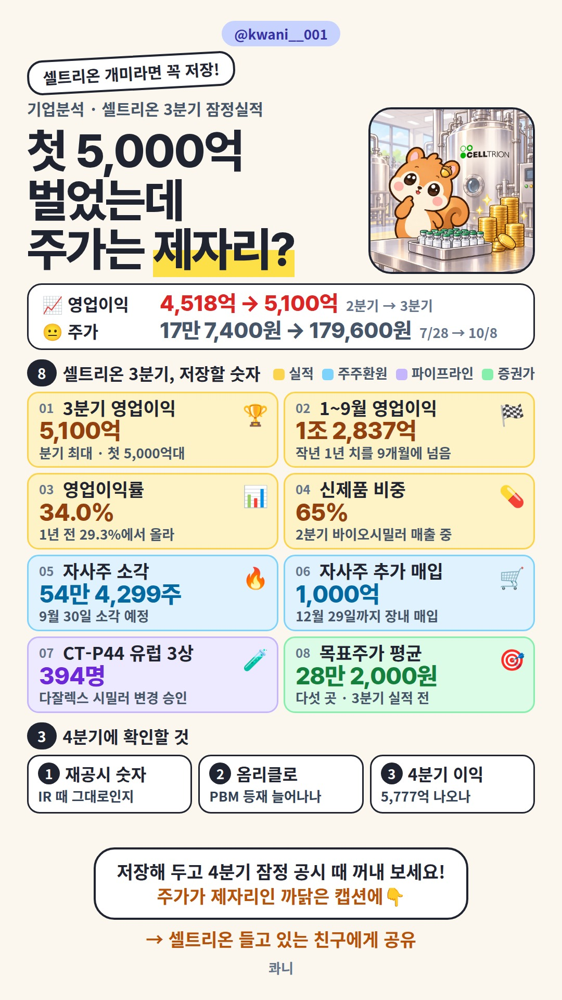
셀트리온 들고 있는데 '실적은 최대라는데 주가는 왜 그대로지?' 싶었던 분, 꼭 저장해 두세요👀 셀트리온이 3분기 잠정 영업이익 5,100억원을 공시했어요. 분기 기준 최대이고, 분기 5,000억원 돌파는 설립 이후 처음이에요. 그런데 7월 28일 17만 7,400원이던 주가는 10월 8일 179,600원, 거의 그 자리였어요. 그래서 3분기 숫자와 4분기에 볼 것을 한 장에 담았어요. 📌 시장이 이미 알던 숫자 에프앤가이드가 모은 3분기 영업이익 추정치가 5,096억원이었어요. 이익률도 지난해 4분기 35.72%가 아직 더 높아요. 📌 이익을 끈 건 신제품 많이 남는 신제품 비중이 커졌어요. 현지 법인이 직접 팔아 유통사 몫이 빠지니 팔수록 남는 몫이 커지는 구조예요. 미국 옴리클로는 10월 출시라 3분기 숫자에 아직 없어요. 📌 수급은 아직 엇갈려요 10월 8일까지 10거래일 동안 외국인 58,670주, 기관 120,714주를 순매도했어요. 5거래일로 좁히면 외국인은 순매수로 돌아섰고요. 목표주가 다섯 곳도 모두 3분기 실적 전에 나온 숫자예요. 📌 4분기가 첫 시험대 연간 추정치를 채우려면 4분기에 5,777억원이 필요해요. 3분기보다 677억원 더 내야 해요. 2분기 잠정 4,300억원이 4,518억원으로 고쳐졌듯, 이번 숫자도 기업설명회 때 다시 공시돼요. 저장해 두고 4분기 잠정 공시 때 꺼내 보세요! 👉 기업분석 정리를 계속 받아 보려면 @kwani__001 팔로우 #셀트리온 #바이오시밀러 #셀트리온주가 #자사주소각 #옴리클로